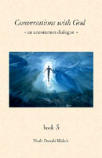

|
Book 3  Page Contents: Quotes - Excerpts Quotes:
|
|
Excerpt #1 - The Morality of Suicide!
Will You speak to me now of something that is troubling me ? Ineed to talk about suicide. Why is there such a taboo against the ending of one's life? Indeed, why is there? You mean it's not wrong to kill yourself? The question cannot be answered to your satisfaction, because the question itself contains two false concepts; it is based on two false assumptions; it contains two errors. The first false assumption is that there is such a thing as "right" and "wrong." The second false assumption is that killing is possible. Your question itself, therefore, disintegrates the moment it is dissected. "Right" and "wrong" are philosophical polarities in a human value system which have nothing to do with ultimate reality—a point which I have made repeatedly throughout this dialogue. They are, furthermore, not even constant constructs within your own system, but rather, values which keep shifting from time to time. You are doing the shifting, changing your mind about these values as it suits you (which rightly you should, as evolving beings), yet insisting at each step along the way that you haven't done this, and that it is your unchanging values which form the core of your society's integrity. You have thus built your society on a paradox. You keep changing your values, all the while proclaiming that it is unchanging values which you . . . well, value! The answer to the problems presented by this paradox is not to throw cold water on the sand in an attempt to make it concrete, but to celebrate the shifting of the sand. Celebrate its beauty while it holds itself in the shape of your castle, but then also celebrate the new form and shape it takes as the tide comes in. Celebrate the shifting sands as they form the new mountains you would climb, and atop which—and with which—you will build your new castles. Yet understand that these mountains and these castles are monuments to change, not to permanence. Glorify what you are today, yet do not condemn what you were yesterday, nor preclude what you could become tomorrow. Understand that "right" and "wrong" are figments of your imagination, and that "okay" and "not okay" are merely announcements of your latest preferences and imaginings. For example, on the question of ending one's life, it is the current imagining of the majority of people on your planet that it is "not okay" to do that. Similarly, many of you still insist that it is not okay to assist another who wishes to end his or her life. In both cases you say this should be "against the law." You have come to this conclusion, presumably, because the ending of the life occurs relatively quickly. Actions which end a life over a somewhat longer period of time are not against the law, even though they achieve the same result. Thus, if a person in your society kills himself with a gun, his family members lose insurance benefits. If he does so with cigarettes, they do not. If a doctor assists you in your suicide, it is called manslaughter, while if a tobacco company does, it is called commerce. With you, it seems to be merely a question of time. The legality of self-destruction—the "rightness" or "wrongness" of it—seems to have much to do with how quickly the deed is done, as well as who is doing it. The faster the death, the more "wrong" it seems to be. The slower the death, the more it slips into "okayness." Interestingly, this is the exact opposite of what a truly humane society would conclude. By any reasonable definition of what you would call "humane," the shorter the death, the better. Yet your society punishes those who would seek to do the humane thing, and rewards those who would do the insane. It is insane to think that endless suffering is what God requires, and that a quick, humane end to the suffering is "wrong." "Punish the humane, reward the insane." This is a motto which only a society of beings with limited understanding could embrace. So you poison your system by inhaling carcinogens, you poison your system by eating food treated with chemicals that over the long run kill you, and you poison your system by breathing air which you have continually polluted. You poison your system in a hundred different ways over a thousand different moments, and you do this knowing these substances are no good for you. But because it takes a longer time for them to kill you, you commit suicide with impunity. If you poison yourself with something that works faster, you are said to have done something against moral law.
Are You saying we should never make promises—that we should never promise anything to anyone? As most of you are now living your life, there is a lie built into every promise. The lie is that you can know now how you will feel about a thing, and what you will want to do about that thing, on any given tomorrow. You cannot know this if you are living your life as a reactive being—which most of you are. Only if you are living life as a creative being can your promise not contain a lie. Creative beings can know how they are going to feel about a thing at any time in the future, because creative beings create their feelings, rather than experiencing them. Until you can create your future, you can not predict your future. Until you can predict your future, you cannot promise anything truthfully about it. Yet even one who both creates and predicts her future has the authority and the right to change. Change is a fundamental right of all creatures. Indeed, it is more than a "right," for a "right" is that which is given. "Change" is that which Is. Change is. That which is change, you are. You cannot be given this. You are this. Now, since you are "change"—and since change is the only thing constant about you—you cannot truthfully promise to always be the same. Do You mean there are no constants in the universe? Are
You saying that there is nothing which remains constant in all
of creativity? When creativity reaches a high level of similarity, you call that identicality. And from the gross perspective of your limited viewpoint, it is. Therefore, in human terms, there appears to be great constancy in the universe. That is, things seem to look alike, and act alike, and react alike. You see consistency here. This is good, for it provides a framework within which you may consider, and experience, your existence in the physical. Yet I tell you this. Viewed from the perspective of all life—that which is physical and that which is nonphysical—the appearance of constancy disappears. Things are experienced as they really are: constantly changing. You are saying that sometimes the changes are so delicate, so subtle, that from our less discerning viewpoint they appear the same—sometimes exactly the same—when, in fact, they are not. Precisely. There are "no such things as identical twins." Exactly. You have captured it perfectly. Yet we can re-create ourselves anew in a form sufficiently similar to produce the effect of constancy. Yes. And we can do this in human relationships, in terms of
Who We Are, and how we behave. A master overcomes every natural tendency (remember, the natural tendency is toward change) to show up as identicality. In truth, he cannot show up identically from moment to moment. But she can show up as sufficiently similar to create the appearance of being identical. Yet people who are not "masters" show up "identically" all the time. I know people whose behaviors and appearance are so predictable you can stake your life on them. Yet it takes great effort to do this intentionally. The master is one who creates a high level of similarity (what you call "consistency") intentionally. A student is one who creates consistency without necessarily intending to. A person who always reacts the same way to certain circumstances, for instance, will often say, "I couldn't help it." A master would never say that. Even if a person's reaction produces an admirable behavior—something for which they receive praise— their response will often be "Well, it was nothing. It was automatic, really. Anybody would do it." A master would never do that, either. A master, therefore, is a person who—quite literally—knows what he is doing. She also knows why. People not operating at levels of mastery often know neither. This is why it is so difficult to keep promises? It is one reason. As I said, until you can predict your
future, you cannot promise anything truthfully. What do You mean? I mean that their evolving truth about a thing differs from what they said their truth would always be. And so, they are deeply conflicted. What to obey—my truth, or my promise? Advice? I have given you this advice before: Betrayal of yourself in order not to betray another is betrayal nonetheless. It is the highest betrayal. |
http://www.inner-growth.info/conversations_with_god/conversations_with_god_book3.htm